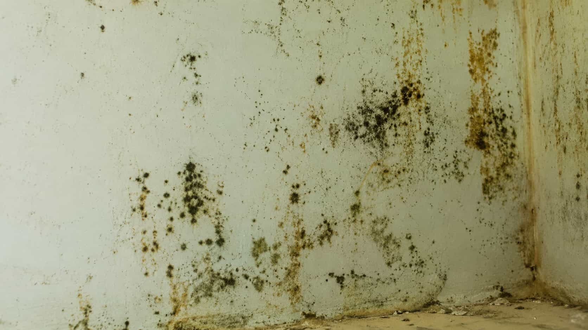

How should the dark growth be described?
Compare how providers ask about location, color, texture, size, odor, moisture, and whether the area is changing.
Common situations
MoldWise helps homeowners organize dark mold concern requests and compare provider options. Participating providers handle evaluation, testing, scope, pricing, and final terms.

Request context
Mention where the dark growth appears, whether moisture is present, and if there has been a recent leak or humidity issue.

Compare details
Compare how providers discuss evaluation, testing questions, containment, scope, availability, and terms.
Compare before choosing
MoldWise helps organize black mold concern requests, but participating providers handle evaluation, testing discussions, scope, pricing, and final terms.
Compare how providers ask about location, color, texture, size, odor, moisture, and whether the area is changing.
Ask whether testing is suggested, separate, necessary for documentation, or handled by another party.
Compare how providers explain access, containment, ventilation, occupied areas, and preparation expectations.
Review whether the provider clearly explains identification limits, testing limits, and final service terms.
Share location, appearance, odor, moisture history, size, and whether the area is changing.
Compare providers that may discuss dark growth concerns, evaluation, or testing questions.
Ask about access, containment discussion, occupied spaces, preparation, and limitations.
You choose whether to continue with any independent participating provider.
Matching process
The platform helps organize your dark mold concern request. Participating providers handle their own evaluation, testing discussions, proposed scope, pricing, scheduling, and final service terms.